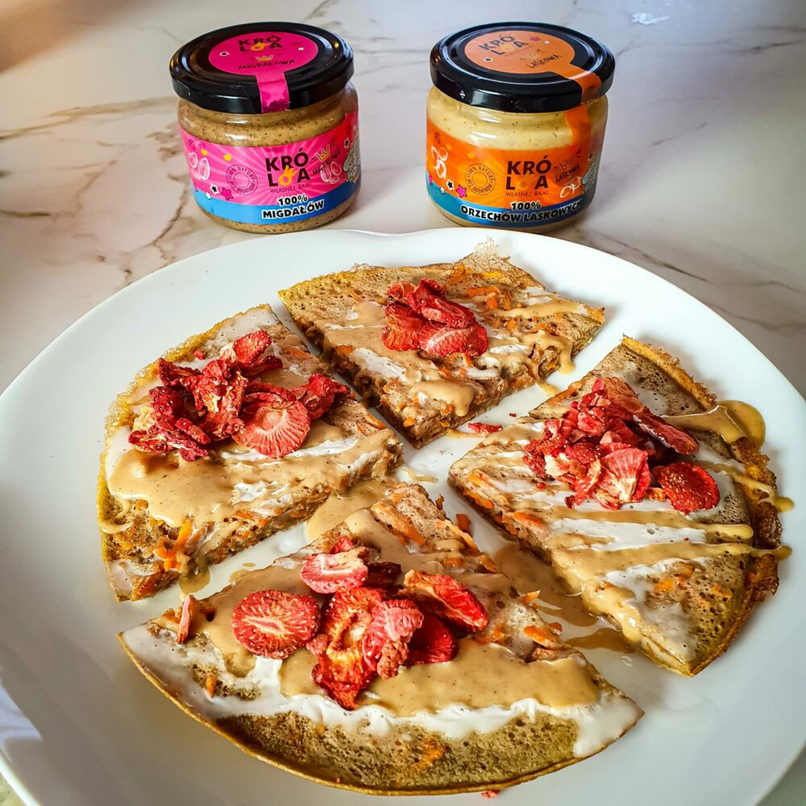

Omlet marchewkowy

Czas przygotowania: 15 min
Typ diety: dowolna
Typ posiłku: śniadanie
Omlet marchewkowy
Czas przygotowania: 15 min
Typ diety: dowolna
Typ posiłku: śniadanie
Marchew obieramy i ścieramy na tarce o drobnych oczkach. Jajka ubijamy ze szczyptą soli na puszystą masę. Mąkę mieszamy z odżywką białkową i cynamonem. Suche składniki i startą marchew dodajemy do ubitych jajek i całość delikatnie mieszamy za pomocą szpatuły.
Patelnię dokładnie smarujemy oliwą, przelewamy na nią ciasto i przykrywamy pokrywą. Omlet smażymy przez kilka minut i ostrożnie przewracamy na drugą stronę, kiedy jego spód się zarumieni. Następnie znowu przykrywamy patelnię pokrywą i smażymy omlet, aż jego druga strona się zetnie.
Omlet przekładamy na talerz, na połowę omletu wykładamy skyr. Orzechy siekamy i większością posypujemy jogurt. Omlet składamy na pół, oprószamy pozostałymi orzechami i podajemy z ulubionymi owocami.